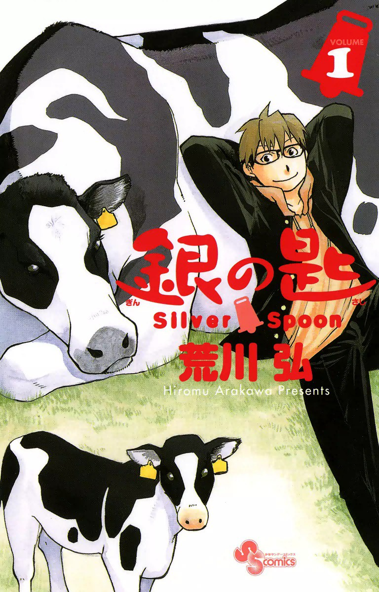
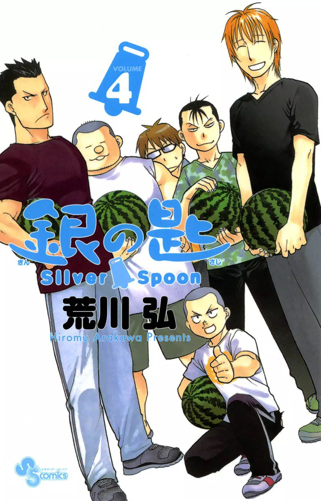
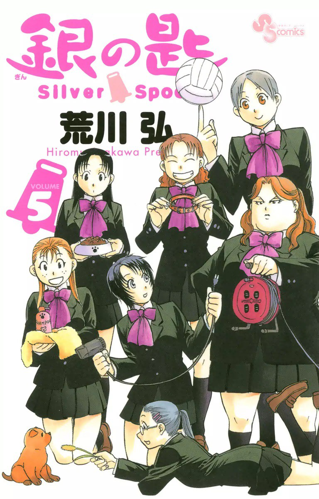
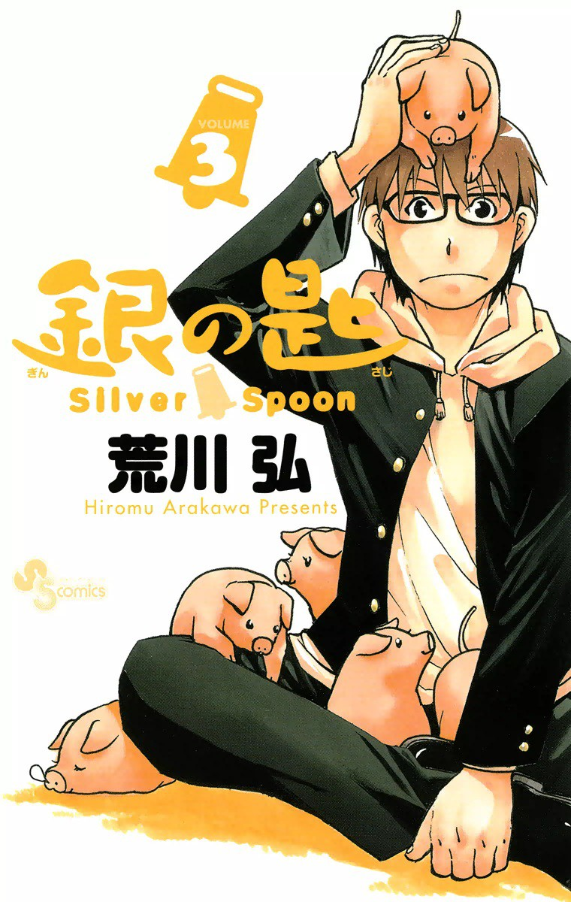
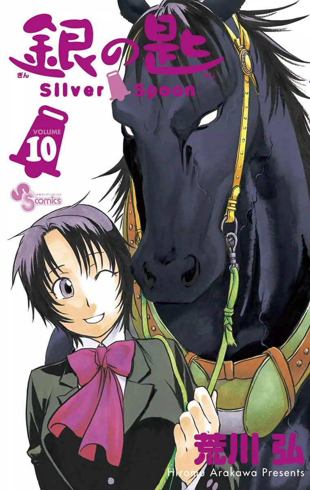
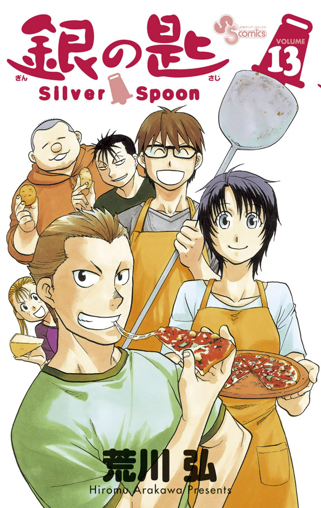

Gin no Saji (Silver Spoon) is an agricultural manga, for real this time.
I only ever watched the anime adaptation so I'll keep whatever I write to only refer to the anime. From what I know, the manga is highly acclaimed and sold much more than the anime. But I've never read it, so I can't really form an opinion on it.
The anime though, it's something very dear to me alongside NHK ni youkoso. It's one of those shows that highly influenced who and where I am now. During one of the lowest points in my life, it showed me an option - a very tough decision to make that I would never even dare to consider. The protagonist's situation before he got accepted into this agricultural school was eerily and disturbingly similar to the situation I was currently in the first time that I watched this anime.
Yugo Hachicken, our main character, grew up in the city. And like any other teenage kids raised in an urban setting, the pressure to get in a well-established school is tantamount to being locked inside a pressure cooker several thousand meters atop the sea level. It is not surprising if anyone couldn't handle the stress associated with it. I mean, it's pretty common, especially in Asian culture - where meeting social expectations are deemed significantly more important than the individual's mental health. It is a problem that's always been there - just that no one seems to be talking about it.
Hachiken doesn't really know what he wants to do with his life - a scenario that I myself am all too familiar with. He failed to get in the high school that his parents expected him to. And you could imagine Asian parents being Asian parents, how much of a disappointment our main character must've felt. So when his teacher gave him a get out of jail free card - that is, offering him help to apply to Ooezo Agricultural High School - Hachiken couldn't care less which school, just anywhere, as far away as possible from his home.
Ooezo Agricultural High School is a boarding school located smack in the heart of Hokkaido countryside, not in the outskirt of some big metropolis. And urban youth in general don't really consider agriculture as a career path, nor look at it as highly as the field of medicine or quantum physics for example. So Hachiken initially thought that he'd easily ace his studies, and that his stay here would be a breeze. But oh boy was he far from the truth.


Turns out each and everyone of his classmates are specialists in specific fields. Those raised in poultry farms for example, would have little to no problem in subjects related to animal husbandry, nor be disturbed by the fact that chickens lay eggs out their anus. His classmates are essentially the type that knows every nook and cranny of the harsh agricultural life. And it doesn't help that our main character here is an amateur at that.
Cue waking up at 4 am every single morning. Not be emotionally attached to animals that you yourself spent countless months or even years taking care of. Stomach a live viewing of a very graphic pig slaughter. The list goes on. And don't get me started on Bovine Palpation. Us who were raised in the city, we're just not used to it - we are not normally exposed to the intricacies that occur before food is served right on our plates. You could argue we pretty much take it for granted. And it's really interesting seeing the dynamic and the difference in reaction and philosophy between a city boy and the rest of his classmates, where for them, this is just business as usual.
We have someone who's very passionate about cheese production. Another who's keen on becoming a veterinarian despite having hemophobia. Or a classmate that aims to take over their large scale factory-esque dairy farm and expand it on a grander scale. Then we have someone whose family farm is barely getting by, working his ass off to become a baseball ball pro, hoping that one day they could pay off their debts. Simply put, everyone in this school has dreams, a goal their working towards.
The students here have a reason why they enrolled in this specialized highschool. For a lot of them, they are there to equip themselves the necessary knowledge and skill set before taking over their family farm in the near future. Then we have Hachiken who's simply there because he ran away from his problems. No reason, no goal, nothing.



The anime is pretty short - 2 seasons, 11 episodes each. And so, it is quite hard to talk about the show without spoiling anything. Well, there is not much to spoil, it is a slice of life afterall. It's just, a lot of the scenes, especially the emotional ones - it hits hard, it hits close to home - and it's best to experience it rather than reading from a butchered description.
Remember I mentioned that this show meant a lot to me. Back when I first watched the anime, I knew I was struggling from something but I was not aware what it was, nor know the reason why was I feeling shit in the first place. When did this start, what was the catalyst, countless questions piling up left unanswered. At that moment in time, all I know is that, the stars somehow aligned and everything was falling apart - relationships, grades, trust, every single thing. There was surely something wrong, I just could not pinpoint exactly what.
It slowly but surely escalated. I lost the ability to concentrate on any of my classes. I remember I could only hear gibberish from the instructors. It was like they were speaking a different language. I started skipping one class, then two, and the next thing I knew, I stopped going to school altogether.
My self confidence eventually went poof, my self esteem non-existent. I felt a lot of shame. And shame is very different from guilt. You feel guilty because you did something wrong. You feel ashamed when you yourself are wrong, your entire existence a mistake.
My energy plummeted for each passing day. A lot of the things that I used to enjoy, I lost interest. Heck, even the most mundane tasks, like getting out of bed, was getting more and more difficult as time progressed.
My thoughts were slowly getting overrun by another voice. I was having suicidal thoughts. Not once or twice per week or something, but like every single second. And as time went on, these thoughts start becoming more and more elaborate, detailed, more and more convincing. It got to a point where I was struggling to differentiate what is real and what is not. No, I was not having hallucinations. It was more like, I was having dreams where part of me thought it actually happened. Like for example, that one time I was so sure my suicide attempt succeeded (a very specific scenario), and then I woke up, relieved, and disappointed that I was still alive and breathing, something like that.
I remember having a lot of anxiety. I was very concerned of my future, which back then, looked very bleak. I could not envision a bright future and my situation, utterly hopeless. I was getting more and more desperate, like there was no saving this - my life in shambles.
Deep down, I knew something had to change. My thoughts went like this - the solution that I came up with - was either I end my life right then and there, or I'll vanish somewhere far, anywhere, maybe start anew where no one knows me, and then eventually end my life right then and there. And I had more than enough money saved up to make either of the two happen.
To put it into perspective - why I seemingly had my back against the wall - I stopped going to school for more than a whole quarter (a quarter is about 4 months), I was skipping classes months before that, and I started losing the ability to concentrate even before that. Yes, it was a very very long time, that I was feeling absolute dogshit.
Why am I still alive right now? I have no idea to be honest.
I remember around June 2018, months after I watched this show, one of my relatives from my mother's side messaged me if I wanted to study in the province. Normally, no one in their right mind would consider this option. I only needed to survive for one more year, and I'd complete my senior highschool studies. I then had a series of serious discussions with a lot of teachers and staff (and one-on-one at that), and a lot of them were willing to help me complete my studies. I mean, it's just one more fucking year.
A similar situation happened back in 2014, I was 13 back then, and I was also in the same exact predicament. I wanted out but adults around me wanted otherwise. It didn't help that I was a scholar (I was getting paid by the government to attend class) in a very highly funded school. I say this because there is a massive inequality between schools in my country, where very specific schools located in very specific regions are getting all the funding, while the average school has barely any facilities and clearly underpaid instructors.
Back in 2014, you could say, I got pressured, socially, to continue my studies. Fast forward 2018, and I thought about it, a lot. I just couldn't see myself continuing my scholarship and finishing it. In my mind there is no way it will ever play out well, like, a noose would surely be coiled around my neck before that'd happen, you get what I mean.
The other choice was to drop out and repeat a year in another school. Which would also mean I'd be betraying everyone's expectations and trust, not just family members but also a lot of my closest of peers. I'd be branded a coward who's only good at running away.
Gin no Saji did not celebrate nor denounce the idea of escapism. But it was clear to convey that there is nothing inherently wrong with running away. So what if you have no future, no dreams, no goals, no direction - then that could also be interpreted as 'because you have nothing, then you can be anything'.
Hiromu Arakawa, the author, also wrote the highly acclaimed classic series Fullmetal Alchemist or FMA for short. FMA: Brotherhood is what I would consider a solid show. It is considered a classic for a reason. And Hiromu Arakawa also grew up in the countryside. So we have a well established writer - and a very good and proven one at that - who happens to have first-hand experience on all things related to agriculture.
Then you could imagine why in 2012, the Gin no Saji manga is the 7th best-selling title in Japan, top selling title not yet to have an anime adaptation, and a title holder of a lot of prominent manga awards including the grand winner of Manga Taishō (annual award given to up and coming manga titles which 3-gatsu no Lion coincidentally won the year before). Then we have the anime adaptation done by A-1 pictures, which has a pretty reputable portfolio or list of adapted titles including Love is War and Shigatsu wa Kimi no Uso to name a few.
Overall, it's one of those shows that is very unique in premise, a very fresh take in the slice of life genre. It is a lighthearted show with a lot of educational value. It is one of those shows that is very entertaining, that you wouldn't notice it's actually teaching you stuff.
Alongside NHK ni youkoso, these are the animes that I feel strongly towards, that I feel indebted to. While I can easily recommend a show like Gin no Saji because of its seemingly campy nature, the same cannot be said on the latter, which is much more unapologetic, raw, and explores a darker reality that people just for some reason refuses to talk about.